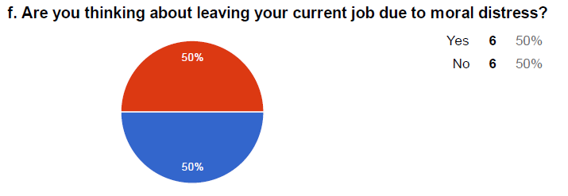
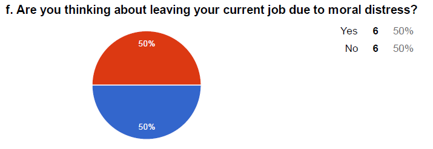

Which Movie Should I Watch Tonight?
- a problem that each one of face solved using principles of Visual Analytics

What movie should we watch tonight?
Created by DataEast
My Contribution
Literature Review
Heuristic Evaluation
Data Modelling
Usability Evaluation
Problem Statement
Many times we have got into a situation where finding a good movie to watch is a trouble. We spend hours searching for one good movie and the search is often tiring proving it to be a bad choice. Hence, we desired to have a tool which could provide helpful information for us to pick a movie to match our taste based on personal interests.
Visualizations:
Datasets:
The two visualization share the same dataset but visualize the data in a different way. Both the visualizations are based on the two datasets mentioned below:
- A breakdown of the 22 types of stories
- Hollywood budget data which have been compiled by “Information is Beautiful”
Problem to address:
Through this Evaluation Study, we aimed to find the most efficient way for the users to be able to choose a movie. We will analyse the different elements of interaction and the best way to present it to the user. The two visualisations will serve as a basis for providing the users with two versions of interactions. So the overall goal would be to come up with a design which would be more intuitive, appealing, save user’s time in search, and give more satisfactory results to the user based on their feedback.Design Process
Interviews
Meetings with Dr. Lucia and the literature review done in the initial phase gave us the business requirements. On the basis of that, we designed our interview sessions. This was a phase of discovery for us as a team. We decided to go with semistructured interviews along with a survey to gather usage of technology and what are the major contributing factors towards Moral Distress. Also, one of the question we deliberately added to the survey was to understand if the nurses are willing to share their experience with others. We were taken aback by their experiences when they felt moral distress. How much pain they go through on some of the days and we are so ignorant about it. Some of the insights that we got from this data gathering technique were quite surprising and completely opposite to Dr. Lucia's research:

Some interesting interview survey results:
-
Every nurse we interviewed was willing to share his/her experience with another nurse, nurse manager, friend or a family member
-
They would like to record the Moral Distress level as soon as they feel it, all they could think a handy way would be a mobile app
-
They would like to receive help for their Moral Distress and learn to deal with it
 


Every nurse we interviewed was willing to share his/her experience with another nurse, nurse manager, friend or a family member
They would like to record the Moral Distress level as soon as they feel it, all they could think a handy way would be a mobile app
They would like to receive help for their Moral Distress and learn to deal with it
Data Analysis
We conducted Affinity Diagramming session to make sense of the interview data. It gave us different categories for Nurse and Nurse Manager profile separately. e.g. For Nurse Persona, we found out the reasons for Moral Distress, ways to cope up with it, concerns they have. Similarly for Nurse Manager Persona, how do the Nurse Managers identify if a nurse is experiencing Moral Distress and not just stress, how do they address or provide help to nurses so that they can cope up with it. Even Nurse Managers had concerns for the tools to cope up or record. They had great suggestions for us on how they want to see the aggregate score of moral distress in a particular unit.
Next step was to create a model which will lead us to our three concepts of problem solution. We chose mental model diagramming to understand our users' motivation to use the system or app. What do they presently do when they experience Moral Distress, what are the different hurdles they face, how system helps them cope up with it. It guided us to our three concepts of solutions to the problem. It gave us the direction in visioning our solution.
Affinity Diagrams - Nurse Profile

Affinity Diagrams - Nurse Manager Profile


Mental Model Diagramming for Nurse Profile

Concept Design - Stretegic Solution, Semi-strategic Solution, Technology based solution
Complete Strategic Solution

Semi-strategic Solution (Technology + Props)

Technology Solution - Mobile App

Technology Solution - Smart Watch
Low-fidelity Prototype
Using Balsamiq, we created Low-fidelity mockups. We were able to a demonstrate our designs to our Mentor who is a Nurse Ethicist, a Nurse Educator, a Nurse Program Manager and a Shift Co-ordinator. Ther initial feedback gave us a few directions for our high-fidelity prototype. However, they were quite happy to see the shape of their imagination. Putting up the Low-fidelity prototypes of the three important concepts
Meter - lets a nurse record her Moral Distress level


Stategies and Huddle
Strategies help the nurses momentory crisis management and Huddle will help them share their experience with other nurses.


High-Fidelity Prototype
After interating over our low-fidelity prototypes, we included all the suggestions that we received from the stakeholders. We created workflow and we realized that there are a few screens that need to be included. We included everything in out high-fidelity prototype created with Axure RP. This is still work in progress. We will soon be evaluating our prototype to get feedback on our designs from Nurses. Dr. Lucia is curious to know the cost involved in developing the prototype into a product. It is a great opportunity for us as students to work on the estimates, so we know what exactly happens in the real world when we design.
Meter - lets a nurse record her Moral Distress level
Stategies and Huddle
Strategies help the nurses momentory crisis management and Huddle will help them share their experience with other nurses.